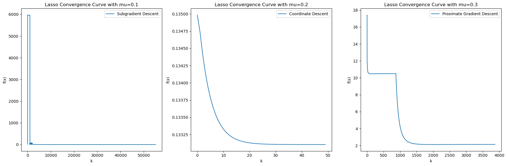

2 Report
Report of Convex Optimization Term Project | Due Date: April 29th, 2024 Professor: Waheed U. Bajwa
This report examines the efficiency and effectiveness of three different optimization algorithms—Subgradient, Coordinate Descent, and Proximal Gradient methods—in solving LASSO (Least Absolute Shrinkage and Selection Operator) optimization problems. LASSO is a popular method in regression analysis that integrates variable selection and regularization to improve the predictability and interpretability of statistical models. Despite its advantages, the LASSO’s non-differentiable nature due to its regularization term poses unique challenges. Our study focuses on comparing these algorithms to determine their suitability for various types of LASSO problems, evaluating their practical performance, advantages, and limitations.
3 Introduction
The Least Absolute Shrinkage and Selection Operator (Lasso) method is a cornerstone of regression analysis, known for its ability to both select variables and regularize data to enhance model interpretability and prediction accuracy. Lasso optimization involves solving a convex optimization problem that is not necessarily differentiable due to the absolute value in its regularization term. This term project explores three distinct optimization algorithms that address these challenges: the Subgradient method, Coordinate Descent, and the Proximal Gradient method. Through a comparative analysis, this report aims to highlight the practical performances, strengths, and weaknesses of each algorithm within the context of Lasso optimization.
4 LASSO (Least Absolute Shrinkage and Selection Operator)
4.1 Background of Lasso
In 1996, Robert Tibshirani first introduced the Lasso, a method now commonly encountered in various fields. The Lasso technique is designed to enhance the prediction accuracy and interpretability of the statistical models by altering the regularization process.
The form of Lasso is given by the following optimization problem:
\[ \begin{align} \min_{\beta} \left\{ \left\| y - X\beta \right\|_2^2 \right\} \\ \text{subject to} \quad \left\| \beta \right\|_1 \leq s \end{align} \tag{4.1}\]
Here, \(y \in \mathbb{R}^n\) represents the response vector, \(X \in \mathbb{R}^{n*p}\) is the matrix of predictors, \(\beta \in \mathbb{R}^{p}\) denotes the coefficient vector and \(s\in \mathbb{R}_+\) determining the degree of regularization
See Figure 4.1 illustrates the simple situation of p=2.
Equation 4.1 is equivalent to the following unconstrained optimization problem by logrange dual function.
\[ \begin{equation} \min_{\beta} \left\{\left\| y - X\beta \right\|_2^2 + \lambda \left\| \beta \right\|_1 \right\} \end{equation} \tag{4.2}\]
Here, \(\lambda \in R^+\). The choice of 𝜆 controls the trade-off between the sparsity of the model 𝛽 and the fit of the model.
4.2 Convexity and Differentiability in Lasso Problem
To elucidate the optimization problem presented in Equation 4.2, we denote the objective function by
\[ \begin{align} f(\beta) &= g(\beta) + h(\beta), \\ \text{where } g(\beta) &= \left\| y - X\beta \right\|_2^2,\ h(\beta) = \lambda \left\| \beta \right\|_1 \end{align} \]
The Lasso optimization problem can then be rewritten from Equation 4.2 as
\[ min_{\beta \in R^p}f(\beta) \]
where the domain of the solution space is explicitly specified as \(R^p\).This reformulation aligns with the general optimization framework \(min_{x\in C}f(x)\) and facilitates the subsequent analysis.
In the context of convexity, the objective function \(f(\beta)\) is established as convex. This is attributed to it being the non-negative sum of \(g(\beta)\), which itself is convex by virtue of being the composition of an affine function and the \(L_2\) norm, and \(h(\beta)\), which is the \(L_1\) norm.
With regard to differentiability, the function \(f(\beta)\) becomes non-differentiable because the term \(h(\beta)\) is non-differentiable at the point \(\beta=0\) despite the differentiability of \(g(\beta)\).
4.3 Challenges of Gradient Descent Method in Lasso Problem
In unconstrained optimization problems as Boyd Stephen said see [1, Ch. 9]:
\[ min_{x\in C}f(x) \tag{4.3}\]
where \(f(x)\) is a convex function, and \(C=domf\) represents a convex set. When \(f(x)\) is differentiable, the optimality condition is defined as: \[ f(x^*) = \min_{x} f(x) \Leftrightarrow \nabla f(x^*)=0 \tag{4.4}\]
However, LASSO is non-differentiable. To solve this problem, the concept of a subgradient will be introduced later in this report, which extends the concept of a gradient to include non-differentiable functions.
5 Subgradient Method in Lasso Problem
5.1 Materials of Subgradient
Theorem 5.1 If a function \(f:\mathbb{R}^n \to \mathbb{R}\) is both differentiable and convex, then for any two points \(x, y\) within a convex set \(C \subseteq \mathbb{R}^n\) , the following inequality holds:
\[ f(y) \geq f(x)+\nabla f(x)^\top (y - x) \tag{5.1}\]
The porperty of convexity shown in Theorem 5.1 leads to the definition of subgradient as following:
Theorem 5.2 For a function \(f: \mathbb{R}^n \rightarrow \mathbb{R}\), a vector \(g \in \mathbb{R}^n\) is called a subgradient of \(f\) at \(x \in dom f\) if for all \(x \in \text{dom} f\),
\[ f(x) \geq f(x_0) + g^\top (x - x_0) \]
If f is convex and differentiable, then its gradient at x is a subgradient. However a subgradient can exist even when f is not differentiable at x. In such cases, the subdifferential at x consists of all vectors that satisfy the definition of a subgradient at the non-differentiable point. These vectors form a set which is a convex set that describes directions in which the value of the function 𝑓 decrease.
Theorem 5.3 The subdifferential of a function \(f\) at a point \(x_0\) is defined as the set of subgradients of \(f\) at any \(x\in dom f\):
\[ \partial f(x) = \{ g : g \text{ is a subgradient of } f \text{ at } x \in dom f\} \]
Then the optimal condition is defined as: \[ f(x^*) = \min_{x} f(x) \Leftrightarrow 0 \in \partial f(x^*) \tag{5.2}\]
5.2 Subgradient in Lasso
Using Equation 5.2, the subgradient of f(x) is:
\[ \partial f(\beta) = -2X^T \left( y - X\beta \right) + \lambda \, \partial \left\| \beta \right\|_1 \tag{5.3}\]
And \(\partial \left\| \beta \right\|_1\) is:
\[ \partial \left\| \beta \right\|_1 = \begin{cases} 1, & \beta > 0 \\ [-1,1], & \beta=0 \\ -1, & \beta < 0 \end{cases} \tag{5.4}\]
Therefore, The subgradient of the function can be characterized as:
\[ \begin{cases} 2X_j^\top (y - X\beta) = \lambda \operatorname{sign}(\beta_j) & \text{if } \beta_j \neq 0 \\ |2(X_j)^\top (y - X\beta)| \leq \lambda & \text{if } \beta_j = 0 \end{cases} \]
Here, \(sign(\beta)\) is:
\[ sign(\beta) = \begin{cases} 1, & \beta > 0 \\ -1, & \beta < 0 \end{cases} \]
5.3 Subgradient Descent Algorithm
In the iterative process, a single iteration step involves a forward movement from the current position along a certain direction. Specifically, during each iteration, based on the current position, a movement is made towards the negative gradient direction to find a new position, thus forming an iterative sequence. The iteration rule is:
\[ x^k = x^{k-1} - t_k g^k, \quad g^k \in \partial f(x^{k-1}) \tag{5.5}\]
During the iterative optimization process, each step is a finite improvement, which does not guarantee the overall convergence of the iterative sequence by itself. However, by selecting the best solution from all the iterations thus far, convergence towards an optimal solution encountered during the iteration process is achieved. The best solution obtained from all the iterations can be characterized as:
\[ f(x^k_{\text{best}}) = \min \{ f(x^i) \}_{i=0,...,k} \]
The complete subgradient descent algorithm process is as follows.
- Set k=0 and initial point \(\beta_1=\beta_2=...=\beta_p=0\) and fixed step size t=1
Repeat
Compute the predicted values \(\hat Y=X\beta\)
Calculate gradients by Equation 5.3
Updata parameter by Equation 5.5
until termination test satisfied.
6 Coordinate Descent Method in Lasso Problem
The Coordinate Descent Method optimizes one variable at a time by fixing all other variables. Its iterative nature involves cycling through each variable and performing optimization until convergence.
One of the primary benefits of the Coordinate Descent Method is its computational simplicity and efficiency. By breaking down the high-dimensional optimization problem into a series of one-dimensional problems, it becomes easier to implement and solve, even with very large datasets. The method also lends itself well to parallelization, which can expedite the computation process considerably.
However, there are some notable limitations. The algorithm can experience a slow convergence rate if the variables in the dataset are highly correlated. In cases of non-convex optimization problems, the method may also fail to find the global minimum as it optimizes each coordinate in isolation, which may not reflect the overall direction of the true minimum.
6.1 Coordinate Descent Method in Lasso
When using the coordinate descent method for Equation 4.2, a key issue arises because the objective function is non-differentiable at \(x=0\) due to the absolute value term that is included in the LASSO penalty. The coordinate descent approach addresses this by utilizing soft thredholding.
According to the subgradient condition denoted as Equation 5.3,the formula can be rewritten in the form of Equation 6.1 .This reformulation is crucial in the coordinate descent method, as it optimizes one dimension at a time while other dimensions remain fixed. Making the dimensions explicit is key for the later derivations.
\[ \frac{\partial f(\beta)}{\partial \beta_k} = \sum_{i=1}^n-2x_{ik} \left( y_i - \sum_{j=1}^mx_{ij}\beta_j \right) + \lambda \, \frac{\partial \sum_{j=1}^m | \beta_k |}{\partial \beta_k} \tag{6.1}\]
And \(\partial \left\| \beta \right\|_1\) is:
\[ \frac{\partial \sum_{j=1}^m | \beta_k |}{\partial \beta_k} = \begin{cases} 1, & \beta_k > 0 \\ [-1,1], & \beta_k=0 \\ -1, & \beta_k < 0 \end{cases} \]
Proceeding with the derivation under the assumption that optimization is conducted along the k-th dimension, taking the partial derivative with respect to this particular dimension yields the following expression:
\[ \begin{aligned} \frac{\partial f(\beta)}{\partial \beta_k} &= \sum_{i=1}^n -2x_{ik} \left( y_i - \sum_{j=1}^m x_{ij}\beta_j \right) + \frac{\partial \sum_{j=1}^m | \beta_k |}{\partial \beta_k} \\ &= \sum_{i=1}^n -2x_{ik} \left( y_i - \sum_{\substack{j=1 \\ j \neq k}}^m x_{ij}\beta_j - x_{ik}\beta_k \right) + \frac{\partial \sum_{j=1}^m | \beta_k |}{\partial \beta_k} \\ &= -2 \sum_{i=1}^n x_{ik} \left( y_i - \sum_{\substack{j=1 \\ j \neq k}}^m x_{ij}\beta_j \right) + 2\beta_k \sum_{i=1}^n x_{ik}^2 + \frac{\partial \sum_{j=1}^m | \beta_k |}{\partial \beta_k} \\ &= p_k + m_k\beta_k+\frac{\partial \sum_{j=1}^m | \beta_k |}{\partial \beta_k} \end{aligned} \]
Assuming that \(\beta_k\) does not equal zero, we equate the partial derivative to zero to find the optimal value of \(\beta_k\), then
\[ \begin{aligned} p_k + m_k\beta_k^*+\lambda sign(\beta_k^*)=0 \\ \Rightarrow \beta_k^* + \frac{1}{m_k} (p_k + \lambda \text{sign}(\beta_k^*)) = 0 \end{aligned} \]
For \(\beta_k^*\), there are three cases to consider based on the value of p_k relative to \(\lambda\) and \(m_k \geq 0\), and it can be written to a solution of \(\beta_k^*\) which is also called soft thredholding (\(S_{\lambda}(p_k)\))
\[ S_{\lambda}(p_k)=\beta_k^* = \begin{cases} -\frac{1}{m_k}(p_k - \lambda) & \text{if } p_k > \lambda, \\ -\frac{1}{m_k}(p_k + \lambda) & \text{if } p_k < -\lambda, \\ 0 & \text{if } -\lambda \leq p_k \leq \lambda. \end{cases} \tag{6.2}\]
Equation 6.2 is a closed form of solution. Therefore, by applying soft thresholding, we can compute the value of \(p_k\) and compare it directly with \(\lambda\) to obtain the optimal value of \(\beta_k\). For instance, if the value of \(p_k\) falls within the range of \(-\lambda\) to \(\lambda\), then \(\beta_k^*\) will be shrunk to zero.
6.2 Coordinate Gradient Algorithm
Here’s how it works in the context of coordinate descent for LASSO:
- Set k=0 and choose \(x^0 \in \mathbb{R}^n\);
Repeat
Compute \(p_k=-2 \sum_{i=1}^n x_{ik} \left( y_i - \sum_{\substack{j=1 \\ j \neq k}}^m x_{ij}\beta_j \right)\)
Compute \(m_k=2\sum_{i=1}^n x_{ik}^2\)
Set \(\beta_k=S_{\lambda}(p_k)\)
k=k+1
until convergence or max number of iterations;
7 Proximal Gradient Method in Lasso Problem
7.1 Materials of Proximal Gradient
The proximal gradient method aims to minimize a composite function of the form:
\[ x = \arg \min_{x} g(x) + h(x) \]
Here, g(x) is a differentiable convex function and h(x) is typically a non-differentiable convex function.
The proximal gradient method addresses this optimization problem by considering different characteristics of h(x):
If h(x)=0, the problem reduces to a standard gradient descent scenario.
If \(h(x)=I_c(x)\), where \(I_c(x)\) is the indicator function for the set C, defined as
\[ I_c=\begin{cases} 0, & x \in C\\ \infty， & x \notin C \end{cases} \]
then the project gradient descent can be employed to enforce the constraints defined by C.
- If \(h(x)=\lambda \|x\|_1\) then then the Iterative Shrinkage-Thresholding Algorithm (ISTA) can be utilized.
In the context of the Lasso problem, as referenced by Equation 4.2, we often encounter large matrix computations involving terms like \((X\top X)^{-1}\), which are computationally intensive. In the ISTA framework, we address this by considering a modified Lasso problem where the matrix X is omitted, focusing instead on a direct relationship between the predictors and the response variable.
The simplified Lasso problem, neglecting the matrix X, is then formulated as:
\[ \begin{equation} \min_{\beta} \left\{\left\| y - \beta \right\|_2^2 + \lambda \left\| \beta \right\|_1 \right\} \end{equation} \tag{7.1}\]
In this reformulation, the solution can leverage the soft thresholding operator \(S_{\lambda}(b)\) to efficiently solve the optimization problem. Soft thresholding serves as the proximal operator in this setting, and is defined as:
\[ x^*== \begin{cases} b + \lambda, & b \leq -\lambda \\ 0, & |b| < \lambda \\ b - \lambda, & b \geq \lambda \end{cases} \tag{7.2}\]
Through this approach, one can solve the Lasso problem without explicitly involving the matrix X, significantly simplifying the computational process, especially in high-dimensional settings where matrix operations become impractical. This adaptation aligns with the objectives of proximal gradient methods which aim to efficiently handle large-scale optimization problems.
7.2 Detailed Derivation of Proximal Gradient Descent for Lasso
To utilize Proximal Gradient Descent as per the soft thresholding equation Equation 7.2, the Lasso problem must be reformulated into a form that does not involve the matrix X.
First, for convex function \(g(x)\), according to Lipschitz continuity, for \(\forall\) x, y, there always exists a constant L s.t.
\[ \left| f'(y) - f'(x) \right| \leq t \|y - x\|_2. \]
Then using a second-order Taylor series，g(x) can be expressed as:
\[ \begin{align} g(x) &= g(x_0) + \nabla g(x_0)^T (x - x_0) + \frac{1}{2} \nabla^2 g(x_0) (x - x_0)^2 \\ &= g(x_0) + \nabla g(x_0)^T (x - x_0) + \frac{1}{2t} (x - x_0)^2 \end{align} \]
Hence, lasso problem now is
\[ \arg \min_{x} \left[ g(x_0) + \nabla g(x_0)^T (x - x_0) + \frac{1}{2t} \|x - x_0\|^2_2 + \lambda \|x\|_1 \right] \tag{7.3}\]
Since \(g(x_0)\) is constant, Equation 7.3 is equivalent to
\[ \arg \min_{x} \left[ \nabla g(x_0)^T (x - x_0) + \frac{1}{2t} \|x - x_0\|^2_2 + \lambda \|x\|_1 \right] \]
To balance the terms, we introduce a constant \((t\nabla g(x_0))^2\) .By doing this, the Lasso problem then becomes
\[ \arg \min_{x} \frac{1}{2t} \|x - x_0 - t\nabla g(x_0)\|^2_2 + \lambda \|x\|_1 \]
Denote \(z = x_0 - t\nabla g(x_0)\)
Thus,
\[ x^{*} = \arg \min_{x} \left( \|x - z\|_2^2 + t \lambda \|x\|_1 \right) \]
Recall the soft thresholding function \(S_{\lambda}(b)\) denoted as Equation 7.2 , which is used in the context of the Lasso problem, reformulated in the form of Equation 7.1 . The optimal solution \(x^*\) can be determined by applying \(S_{\lambda}(z)\), which is known as the proximal operator.
\[ \text{prox}_{t,h()}(z)=S_{\lambda}(z)= \begin{cases} z + \lambda, & z \leq -\lambda \\ 0, & |z| < \lambda \\ z - \lambda, & z \geq \lambda \end{cases} \]
7.3 Proximal Gradient Algorithm
- Set k=0 and intial point \(x^0\)
Repeat
Compute z by \(z^{(k)} = x^{(k)} - t\nabla g(x^{(k)})\)
Compute proximal operator by \(\text{prox}_{t,h()}(z^{(k)}) = S_{\lambda}(z^{(k)})\)
Set \(x^{(k+1)}\) by \(x^{(k+1)}=\text{prox}_{t,h()}(z^{(k)})\)
until convergence or max number of iterations;
8 Evaluation of performance of Algorithms for Lasso
When comparing three algorithms for solving the Lasso regression problem, we primarily focus on two dimensions of performance: convergence speed and computational efficiency. The convergence curves illustrate the trend of the objective function value with the number of iterations, while the computation time reflects the running efficiency of each algorithm.
To test performance of algorithms, a synthetic Gaussian data with N observations and p predictors which is used for test in J.Friedman’s work [2].
Following is the results of test.

| Subgradient Descent | Coordinate Descent | Proximal Gradient Descent | |
|---|---|---|---|
| Time Spent | 0.5877 | 0.0090 | 0.0823 |
Observing the convergence curves, Coordinate Descent demonstrates a notably quick convergence characteristic, achieving lower objective function values with fewer iterations compared to the other two algorithms. The Subgradient Descent method converges very slowly, and it is noticeable that the f(x) does not consistently decrease, which aligns with our theoretical understanding that Subgradient Descent does not guarantee monotonicity. The Proximal Gradient Descent method has a medium speed of convergence among the three, but its initial phase of convergence is quite significant.
In terms of computation time, Coordinate Descent significantly outperforms the other methods, exhibiting the lowest time consumption, highlighting the efficiency of Coordinate Descent. The time spent by Proximal Gradient Descent is higher but still substantially less than that of Subgradient Descent.
Taking into account both the convergence curves and time spent, Coordinate Descent provides the best balance of performance for handling the Lasso problem with synthetic data. It is not only fast in terms of convergence but also high in operational efficiency. This can be attributed to its approach of updating one variable at a time, which reduces the computational load and potentially leverages the structural properties of the problem.
9 Conclusion
The LASSO problem involves a non-differentiable function, which cannot be handled by the standard gradient descent method. This has led to the adoption of the subgradient descent method as a solution. The Subgradient method provides a straightforward approach; however, it does not guarantee descent in each iteration. That is slow and does not yield a sparse model. Alternative methods based on the concept of subgradients, such as Coordinate Descent and the Proximal Gradient method, are employed. Coordinate Descent excels in high-dimensional spaces, making it ideal for sparse models, and its computational speed is the reason for its widespread industrial use in implementing the Lasso algorithm.
10 Reference
Appendix
https://github.com/Siyu-789/CONVEXOPT_Proj